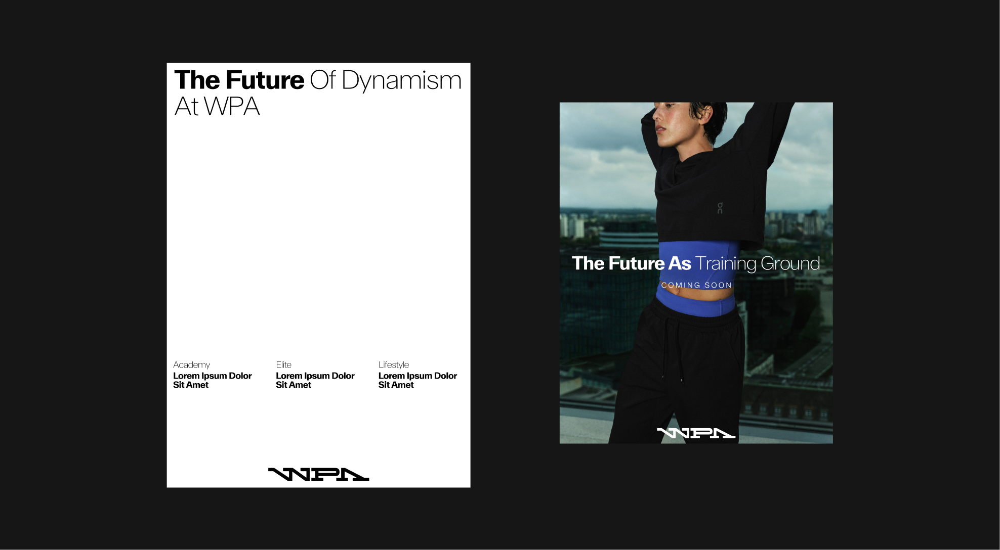
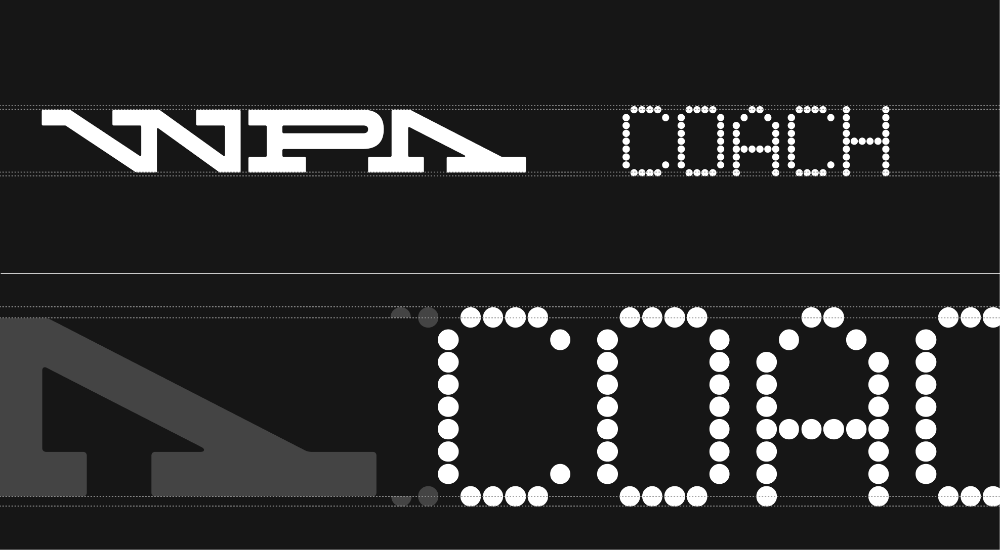

Typography
Typography is a central part of the WPA identity. It conveys our confidence, precision, and accessibility — the same values that define us on and off the court. Our chosen typeface, ABC Walter Neue, is versatile and dynamic: light cuts bring elegance, bold cuts project strength, and balanced weights create a clear hierarchy across all communications.
These guidelines define how typography should be structured, from titles and headlines to body text, ensuring legibility, consistency, and a distinctly WPA look and feel. By following this system, we can speak with one unified voice — premium, modern, and welcoming to all.
4.1. Overview
ABC Walter Neue
Fine for dynamism and elegance, bold for stability and worldwide reach.
Walter Neue - 3 different cuts
Walter neue - character set
 ABC Walter Neue mager
ABC Walter Neue mager
 ABC Walter Neue mager
ABC Walter Neue mager
General Misuse
When it comes to styling text in Walter Neue, there are a few key guidelines to keep in mind. First, ensure that your font sizes are consistent across headings and body text to maintain a cohesive look. Second, pay attention to line spacing; it should be comfortable enough to enhance readability without feeling cramped. Lastly, don’t shy away from using color to highlight important information, but make sure it aligns with your overall design palette. Following these simple rules will help you create a polished and professional appearance.
 Do not apply a striketrough to the text
Do not apply a striketrough to the text
 Do not stretch or shrink the text
Do not stretch or shrink the text
 Do not unalign the text
Do not unalign the text
 Do not apply a drop shadow effect on the text
Do not apply a drop shadow effect on the text
4.2. Structure & Hierarchy
Hierarchy & Weights
Use Walter Neue Fett and Fein together for writing titles and subtitles. For smaller texts arranged in blocks, use Walter Neue Mager for better readability.
Combining fonts - Hierarchy of Twos
To highlight top-level headings, break the word group apart and apply Neue Fett first, then switch to Neue Fein at the end of the sentence. Neue Fein then allows the selected words to be highlighted.
Hierarchy of Two - Subtitles
To distinguish paragraph headings from the rest of the text, it is recommended to use both font weights as shown above, in order to clearly separate the two levels of reading.

Use of Capitals
For a cohesive brand look, start titles and subtitles with capital letters for each word. In the body text, use capital letters at the beginning of sentences to enhance readability.
Capitals exceptions
Capitals exceptions Sometimes, when the title doesn't quite capture everything, a catchy subtitle in all caps can really enhance the meaning.
Capitals exceptions : do
Because of its unique status, the capital subheading is applied selectively with specific investments.
Capitals exceptions : don't
Use of sizes
We use various text sizes with a specific word count to ensure everything remains easy to read.

Sizes Application
Example of text size hierarchy according to format.
Sizes application : Misuse
Do not use text sizes that are not proportional to the content or number of words.
4.3. Technical Rules
Alignments
Depending on the format, titles are aligned to the left or centered, but not to the right or justified.
Text Alignments
Depending on the format, standard texts are aligned to the left or centered, but not to the right or justified.
Typography - tracking 1
Tracking refers to the white space between letters. It is standard practice to use tracking that is appropriate for the weight and size of the font to ensure legibility and WPA values.
Tracking : Misuse 1
A tracking system that's either too tight or too loose feels off.

typography - tracking 2
For body text and subtitles, less tight tracking is used so as not to compromise readability, while remaining consistent with the tracking of the main elements.
typography - Leading
The letter spacing of the body text and subtitles should be optically larger than the space between each word, without making the paragraphs look too sparse.
typography - Margins
Margins are based off the size of the logo's clearspace
Uses of Margins
Grids and points
Different text sizes can be aligned on the same baseline grid, which is proportional to the size of the logo. For a rational hierarchy, favor text sizes that are multiples of two.
Title Line
Grid Application
Type-led - Misuse
Ensure typography stays clean and minimal. The following show what not to do.
4.4 Alternate Typography
Pixidot Mayhem dotted
Pixidot Mayhem Dotted Typeface is used alongside ABC Walter as a supporting font. It helps clarify specific information and enrich content when applied to signage. Additionally, it is used by WPA's Academy branch. Dedicated to children to create a more engaging and educational experience.
Character set
This typeface, characterized by its distinctive dotted design, takes inspiration from the perforations found in padel rackets. Within the WPA identity, it functions as a display typeface and is also featured within the graphic device.
Usage
The alternative typeface is used exclusively in uppercase on banners that feature the logo, wordmark, or a title set in the primary typeface.
Pairing with ABC Walter
When used together, the two typefaces maintain the same proportions and should be horizontally aligned.
Pairing with WPA Wordmark
When using Pixidot Mayhem Dotted, always maintain a clear space around it equal to one unit of the logo’s height. This is especially important, as the WPA logo occupies substantial visual space due to its length and distinctive design elements.
Kerning
In theory, the spacing between two letters in Pixidot Mayhem Dotted should correspond to the height of a single dot in the typeface, including its surrounding clear space.
Correct and incorrect kerning
The spacing between letters in Pixidot Mayhem Dotted should correspond to the height of a single dot in the typeface to maintain visual harmony and legibility. When the spacing is too tight, the text appears cramped and difficult to read; when it’s too wide, it disrupts the rhythm and breaks the connection between letters. Consistent spacing aligned with the dot height creates a balanced and aesthetically pleasing result.
Applications
As previously shown, Pixidot Mayhem Dotted can be used in conjunction with ABC Walter, allowing it to overlay images and other types of content.
Connect Misuses
Avoid common mistakes when using Pixidot Mayhem Dotted with ABC Walter in a banner.
4.5. color and Contrast
Colors : Do
Use white text for dark backgrounds and black text for light backgrounds.
Colors : Do
Use white text for backgrounds with gradients leaning toward dark, cool tones, and black text for backgrounds with gradients leaning toward warm, light tones.
colors : Don't
Do not deviate from the colors specified in the colors Section of this guideline.
Application
The font used for sizes such as titles and subtitles can be placed in front of images.
4.6. Advanced Features
ABC Walter - ligatures
In everyday use, the ABC Walter typeface has special characters that are intended to be used when the occasion arises. Ligatures, for example, are glyphs that merge two characters into one for better readability.
ABC Walter - Regional caracters
Although most texts are written in English for international reach, it is possible to use regional specific characters in appropriate contexts.
ABC Walter - Quotation marks
When using ABC Walter, ensure that you apply US-style typographic quotation marks for titles and body text. This means using left double quotation marks and right double quotation marks instead of other quotation marks.
Pixidot Mayhem dotted - Ligatures
In the Pixidot Mayhem Dotted typeface, ligatures appear in certain specific cases.
Pixidot Mayhem dotted - Special glyphs
Additionally, special glyphs can be used with the Pixidot Mayhem Dotted typeface, particularly within the graphic device when creating signage. The primary glyphs are the cardinal direction arrows, as shown above.
Pixidot Mayhem dotted - Special glyphs set
Even though they are not always used, a wide range of special glyphs is available with this typeface. Below is a non-exhaustive list.
Pixidot Mayhem dotted - Regional Characters
Most texts are written in English for broader accessibility; however, Pixidot Mayhem Dotted supports a range of accented and international characters.
Pixidot Mayhem dotted - Quotation marks
When using quotation marks with Pixidot Mayhem Dotted, always use straight double quotes instead of curly or angled quotation marks.